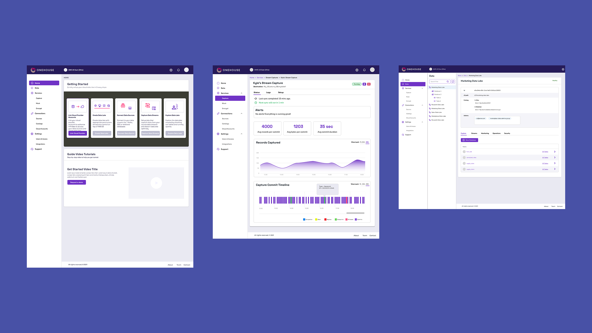

I make complex products feel obvious.
I’m Jonathan Lu, a product designer working across enterprise SaaS, e-commerce, and consumer products—from first flows to shipped design systems.
Experienced in cross-functional product teams, research-led decisions, and turning dense workflows into clear interfaces.
Shipped work, not just polished screens.
Each case study connects the product problem to the decisions, systems, and outcomes behind the interface.

NortonLifeLock
Design leadership across four security and family product lines, aligning separate teams around clearer journeys.
10M+ downloads · 42% conversion lift
Fabletics
Subscription checkout, a product-line launch, and loyalty experiences for a high-growth commerce team.
833% YoY subscriber growth
Techstars
A tailored investor-onboarding dashboard that made Salesforce Lightning fit the team’s real workflow.

OneHouse
Dashboard architecture and core flows for a new data-automation product built from technical requirements.

Nester
One connected system spanning the public marketing site, product dashboard, and property reports.

Katin
A reusable storefront system that replaced slow, one-off promotional layouts with durable modules.

Oscars.org ↗
A reorganization of the Academy’s public experience across desktop, tablet, and mobile.

WatchBox ↗
Custom Salesforce Lightning pages designed around the luxury watch sales team’s workflow.
I bring product thinking and systems craft to teams that need to simplify complexity, align quickly, and ship with confidence.
Let’s make the next thing clearer.
Hiring for product design, UX leadership, or a complex redesign? I’d like to hear what you’re building.
betayards@gmail.com ↗